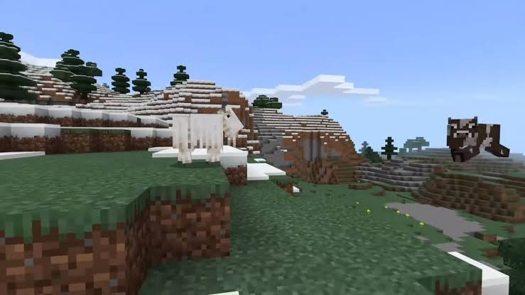
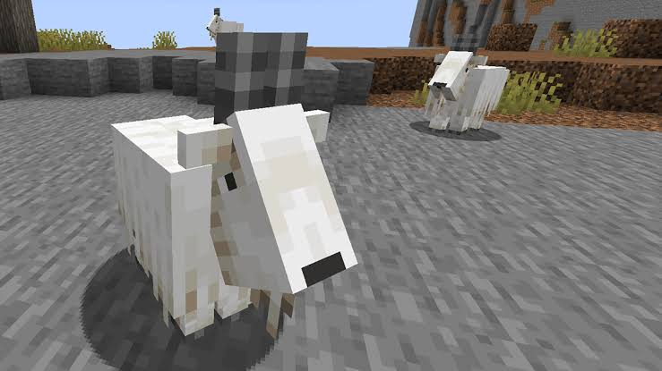
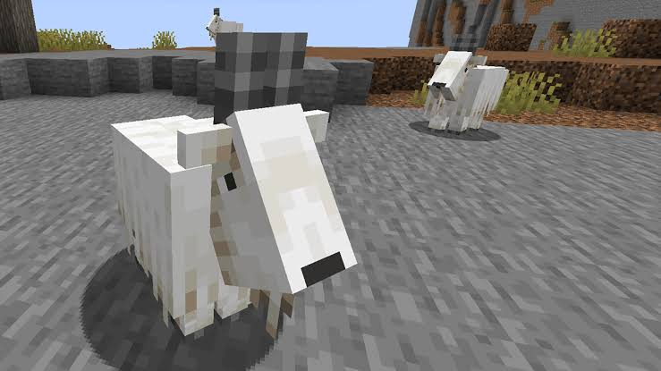

#the minecraft caves & cliffs #
We present to your attention the announcement of the upcoming update for Minecraft Bedrock 1.17.0 for Android! Most recently, developer Mojang held a very significant event called Minecraft Live 2020, which presented new innovations that will be added to the Minecraft world in the Minecraft PE 1.17 update.
At Minecraft Live 2020, the developers announced the Caves & Cliffs update. In the upcoming update, you will find a large number of new features that we will tell you about today.
And we want to note that this update should be presented both for the Java version and for the Mobile version of the Minecraft game.
Please note that the release of Minecraft PE 1.17 will be presented to the Minecraft community next year, namely in the summer of 2021. Our team hopes that this winter we will see the first beta versions of this update.
Let's take a look at all that will be added to the Minecraft world in the upcoming Minecraft update 1.17.
download

Telescope
Allows you to see at a great distance. Crafted from crystals and copper.

New mob: Warden
This mob looks like a minotaur. Reacts to sounds and senses your fear. The faster you run, the faster it catches up. To survive, you need to sneak.

New mob: Glow squid.
Minecraft Live 2020 event voting winner.
During Minecraft Live, players voted for a new mob: the Glow squid won. These creatures will be found in the depths of the sea and in underground caves. Another source of light in the Minecraft world.

The next location is the Dripstone Cave. A place where you will see a lot of Stalagmite and Stalactite.
Stalagmite is mineral formations that grow from the ground. Stalactite is mineral formations that grow on the ceiling of a cave.
These formations are quite dangerous, as they can cause instant damage regardless of whether the player fell on them or they fell on him. Please note that water drips from the stalactites, which can be used to fill the cauldrons if they are placed under the stalactite.

lush caces
The first thing we'll look at is Lush caves.
A very large and deep cave will be added to the world of Minecraft, overgrown with various plants, and flooded with water in places. The developers have changed the generation of caves. Added new types of plants:

New resource: Copper
New ore will be generated underground.
Used to craft Telescope and Lightning Rod.
Using this resource, players can create copper blocks.
Copper blocks change color over time due to oxidation, namely, turn green.
Amethyst
Amethyst Geode is a rare block that generates new structures underground. This block cannot be broken. Amethyst Geode blocks grow Amethyst Crystal. Shards of crystals drop from them. Used to craft a telescope.

Archeology
Use a brush to remove ceramic shards. The shards can be placed on pots and burned. The fragments may depict:

Bundles
The developers have solved the problem of lack of space in the inventory and added new bags.
Updated generation
The developers of the Mojang studio have changed the generation of the world.
What will be changed?: Underground waters will be added to the Minecraft world, mountains have become steeper and higher, ore underground will be generated in groups, Powdered Snow will be added through which the player will fall through, and new structures have been added.

Sculk chute
Sculk Growth is a thin growth, like a layer of snow.
The Sculk Sensor is a sensor that responds to steps, block placement, and shots. Wool can drown out the sound, then the sensor will not respond. When triggered, activates the Redstone signal.Sculk block
New mob: Axolotl
This is a new type of fish found underwater in Lush Cave.
Players can catch them using a bucket and tame them.
Tamed Axolotl mobs protect players.
In the Minecraft world, they spawn in different colors.
During the battle, they can pretend to be dead to restore health.

Lightning rod
During a thunderstorm, attracts lightning strikes and protects the house. Crafted from copper.
New mob: Goat
New mobs have been added to the mountain biome, namely Goats.
They jump high, overcoming obstacles.
Butt and push other animals and creatures far away.
 
